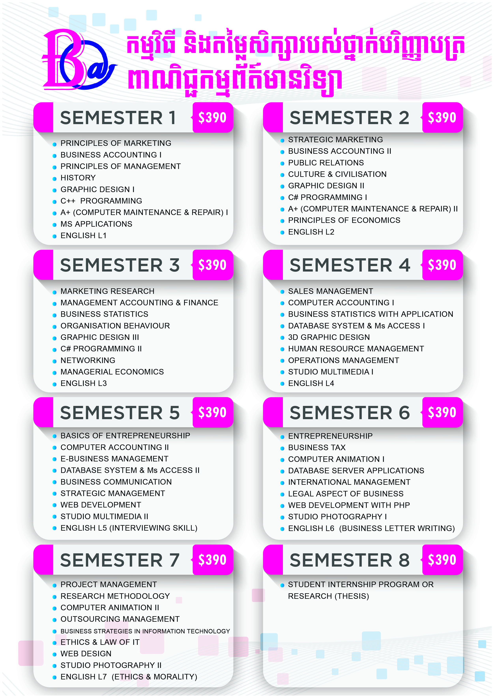
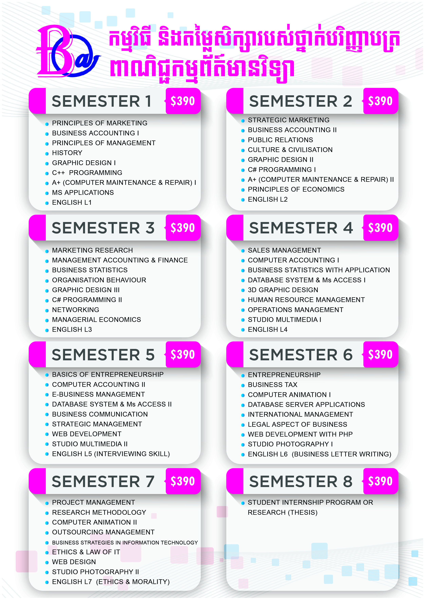

What is “Business information Technology ”?
In the new era of competitive environment, doing business depends very much on the use of information technology to be successful. BIT will offer you with dual knowledge, the way doing business and information technology. The use of information technology as a mean of doing business is a popular theme in the advanced countries in the world. Other developing countries endeavor to take advantage from information technology to do business. The requirements of human resources and their business units are greater and more complex which require manager to have extensive knowledge on the most recent technology for their work. The understand of BIT will help you obtain the above-mentioned dual knowledge.
 

OTHER MAJOR